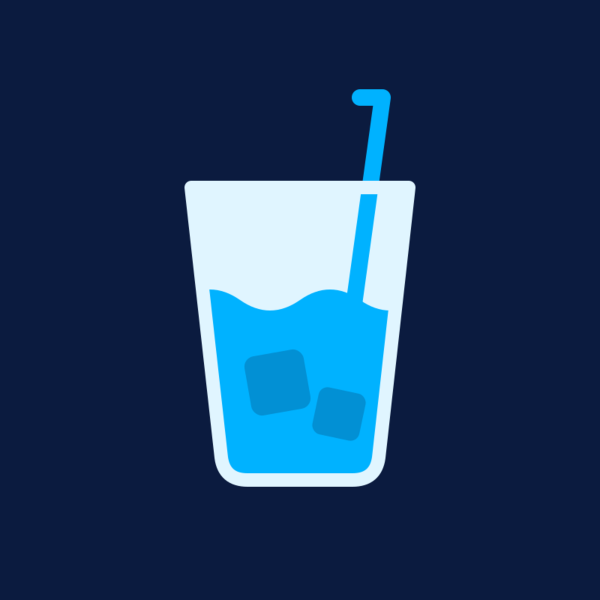

Your First Year Investing in Europe
A free checklist for your first twelve months of investing, wherever in Europe you live.
Download the checklist (PDF)
A free checklist for your first twelve months of investing, wherever in Europe you live.
Download the checklist (PDF)